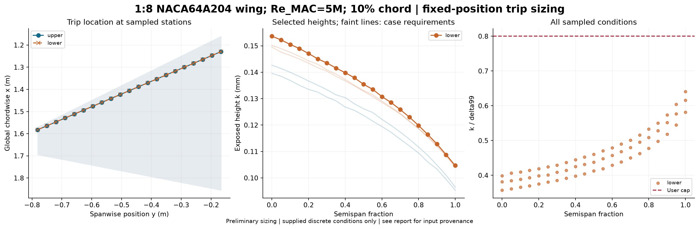

Status: not_feasible. Original user left-wing planform scaled uniformly 1:8 (all lengths /8 and area /64); model MAC=0.578625 m; root/tip chords=0.695/0.125 m. NACA 64A204 from the recorded PDAS source is used at every section with zero twist. Angles refer to the nominal NACA chord/global X; the geometric-LE chord rotation is corrected in XFOIL local alpha. Mach=0.2; model-MAC Reynolds numbers 3e6, 5e6, 8e6; angles 0,1,2 degrees. These Reynolds numbers are not divided by 8. Independent 2D XFOIL strips do not solve 3D sweep flow. Geometry comes from supplied sections; coordinates and reference lengths must already be at wind-tunnel model scale. Eta spans only the supplied Y stations; no unprovided wing root, tip or full planform is inferred. All coordinates are interpreted in metres. Upper/lower curve order must match the section contour order. Angle mapping is explicit in the workflow settings. XFOIL is a 2D section method without crossflow. XFOIL computes its own Cp from geometry; imported Cp is not prescribed to its viscous solver. The undisturbed calculation allows natural transition; the requested trip is not imposed in XFOIL. DUMP supplies integral quantities, not resolved u(y). Low-Mach Hk/theta reconstruction is approximate. Re_k reconstruction uses constant freestream kinematic viscosity; DUMP does not provide nu(y) or wall temperature. Laminar confirmation is predicted by the solver transition model, not established experimentally. Filtered from the saved nine-condition boundary-layer dataset; no solver rerun.
Source: integral; critical Re_k: 600.0; height multiplier: 1.1; k/delta99 cap: 0.8.
Calibration: Subsonic equiaxed distributed grit; NASA TN D-3579. Mach cap 0.95 is a tool guard.

| surface | eta | x_c | height_mm | status | reason |
|---|---|---|---|---|---|
| upper | 0.0 | 0.1 | None | invalid | state6: Trip is at/downstream of predicted upper transition x/c=0.0103 |
| lower | 0.0 | 0.1 | 0.15363984995198532 | feasible | |
| upper | 0.05000000000000003 | 0.1 | None | invalid | state6: Trip is at/downstream of predicted upper transition x/c=0.0104 |
| lower | 0.05000000000000003 | 0.1 | 0.15223612388444496 | feasible | |
| upper | 0.1 | 0.1 | None | invalid | state6: Trip is at/downstream of predicted upper transition x/c=0.0105 |
| lower | 0.1 | 0.1 | 0.15051633826072197 | feasible | |
| upper | 0.15 | 0.1 | None | invalid | state6: Trip is at/downstream of predicted upper transition x/c=0.0105 |
| lower | 0.15 | 0.1 | 0.14897092790007266 | feasible | |
| upper | 0.19999999999999998 | 0.1 | None | invalid | state6: Trip is at/downstream of predicted upper transition x/c=0.0106 |
| lower | 0.19999999999999998 | 0.1 | 0.14707003202318075 | feasible | |
| upper | 0.25000000000000006 | 0.1 | None | invalid | state6: Trip is at/downstream of predicted upper transition x/c=0.0111 |
| lower | 0.25000000000000006 | 0.1 | 0.14506967485112043 | feasible | |
| upper | 0.30000000000000004 | 0.1 | None | invalid | state6: Trip is at/downstream of predicted upper transition x/c=0.0118 |
| lower | 0.30000000000000004 | 0.1 | 0.14349481646600812 | feasible | |
| upper | 0.35000000000000003 | 0.1 | None | invalid | state6: Trip is at/downstream of predicted upper transition x/c=0.0126 |
| lower | 0.35000000000000003 | 0.1 | 0.14157348039010967 | feasible | |
| upper | 0.39999999999999997 | 0.1 | None | invalid | state6: Trip is at/downstream of predicted upper transition x/c=0.0134 |
| lower | 0.39999999999999997 | 0.1 | 0.13983016149075123 | feasible | |
| upper | 0.45 | 0.1 | None | invalid | state6: Trip is at/downstream of predicted upper transition x/c=0.0142 |
| lower | 0.45 | 0.1 | 0.13789325811179287 | feasible | |
| upper | 0.5 | 0.1 | None | invalid | state6: Trip is at/downstream of predicted upper transition x/c=0.0149 |
| lower | 0.5 | 0.1 | 0.13544177673664734 | feasible | |
| upper | 0.5499999999999999 | 0.1 | None | invalid | state6: Trip is at/downstream of predicted upper transition x/c=0.0156 |
| lower | 0.5499999999999999 | 0.1 | 0.13352026022288555 | feasible | |
| upper | 0.6 | 0.1 | None | invalid | state6: Trip is at/downstream of predicted upper transition x/c=0.0163 |
| lower | 0.6 | 0.1 | 0.13078353107581106 | feasible | |
| upper | 0.6499999999999999 | 0.1 | None | invalid | state6: Trip is at/downstream of predicted upper transition x/c=0.0169 |
| lower | 0.6499999999999999 | 0.1 | 0.1285342672798633 | feasible | |
| upper | 0.7 | 0.1 | None | invalid | state6: Trip is at/downstream of predicted upper transition x/c=0.0184 |
| lower | 0.7 | 0.1 | 0.12586545074211766 | feasible | |
| upper | 0.7499999999999999 | 0.1 | None | invalid | state6: Trip is at/downstream of predicted upper transition x/c=0.0207 |
| lower | 0.7499999999999999 | 0.1 | 0.12300414110128857 | feasible | |
| upper | 0.8 | 0.1 | None | invalid | state6: Trip is at/downstream of predicted upper transition x/c=0.0232 |
| lower | 0.8 | 0.1 | 0.11982769002149254 | feasible | |
| upper | 0.8500000000000001 | 0.1 | None | invalid | state6: Trip is at/downstream of predicted upper transition x/c=0.0282 |
| lower | 0.8500000000000001 | 0.1 | 0.11645116913574663 | feasible | |
| upper | 0.9 | 0.1 | None | invalid | state6: Trip is at/downstream of predicted upper transition x/c=0.037 |
| lower | 0.9 | 0.1 | 0.11286727196149114 | feasible | |
| upper | 0.9500000000000001 | 0.1 | None | invalid | state6: Trip is at/downstream of predicted upper transition x/c=0.0545 |
| lower | 0.9500000000000001 | 0.1 | 0.10878496335022152 | feasible | |
| upper | 1.0 | 0.1 | None | invalid | state6: Trip is at/downstream of predicted upper transition x/c=0.0898 |
| lower | 1.0 | 0.1 | 0.10468102738492527 | feasible |
Uniform-height alternative across supplied stations: {'status': 'unavailable', 'height_mm': None}
See per-condition results, design table, and full results and input hashes.